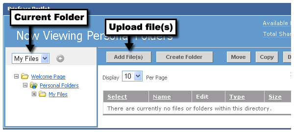
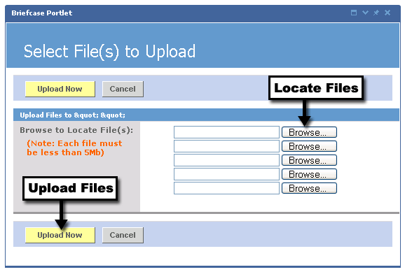

Adding Files to the Briefcase
Before uploading a file to your Briefcase, make sure you first select the folder where you want the file to go. This is done by clicking the folder's name in the left navigation area. Verify that the folder's name appears in the drop-down menu at the top of the navigation area.
When you are ready, click the Add File(s) button to begin choosing files to upload.

You can upload up to five files at a time into your Briefcase. Depending on your institution's rules, there may be a size limitation placed on each individual file. If this is the case, the file size limit will be stated on the left in bold lettering.
To search your computer for a file to add, follow these steps:
- Click any of the Browse... buttons.
- Then traverse through your computer's directory structures to locate the file.
- Select the file by clicking it.
- Click the Open button.
- You will now see the path to this file has been entered into the text field. To add more files, repeat steps 1-4.
- When you are finished locating files, click either of the Upload Now buttons.
You will now see that the file has been added to your Briefcase.
